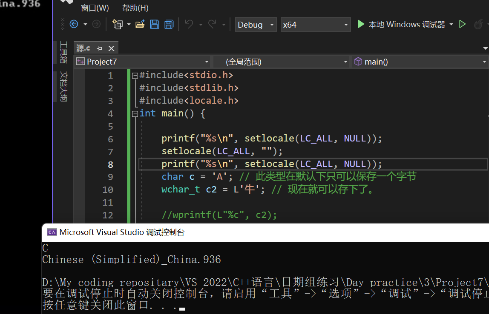

Windows-API-程序设计(4)
系统学习Windows API 4
下面专门讲授wchar_t，他是宽字符的意思。
因为我们需要大量的输出中文，为了适配，我们常常使用wchar_t
#include<stdio.h>
int main() {
char c = 'A'; // 此类型在默认下只可以保存一个字节
wchar_t c2 = L'牛'; // 现在就可以存下了。
} 但是这样还是会不认识，原因在于。。。
#include<stdio.h>
#include<stdlib.h>
#include<locale.h>
int main() {
setlocale(LC_ALL, ""); // 设置windows本地的编码
char c = 'A'; // 此类型在默认下只可以保存一个字节
wchar_t c2 = L'牛'; // 现在就可以存下了。
wprintf(L"%c", c2);
}
那如何查看当前的地域呢？
printf("%s\n", setlocale(LC_ALL, NULL));
setlocale(LC_ALL, "");
printf("%s\n", setlocale(LC_ALL, NULL));
对于宽字符，我们有跟char一样配饰的各式各样的函数。这里不再做什么介绍了！
三大版本的char类型
在微软中，有三大类型——CHAR , WCHAR, TCHAR（ASCII，Unicode和通用版本）
随后还有字符串版本的PSTR PWSTR, PTSTR, PC(onst)STR PCWSTR, PCTSTR…
#include<Windows.h>
int WINAPI WinMain(
_In_ HINSTANCE hInstance,
_In_opt_ HINSTANCE hPrevInstance,
_In_ LPSTR lpCmdLine,
_In_ int nShowCmd
)
{
CHAR a = 'a';
WCHAR b = 'b';
TCHAR c = 'c';
} 看到TCHAR是根据平台的字符集选择而发生变动！建议我们的编程使用Unicode字符集。
字符转换
下面来看字符转换——将多字节字符和宽字符。为了使得转换方便，我们需要使用：
MultiByteToWideChar();
这个函数将字符串映射到 UTF-16 (宽字符) 字符串。 字符串不一定来自多字节字符集。
注意！错误地使用 MultiByteToWideChar 函数可能会损害应用程序的安全性。 调用此函数很容易导致缓冲区溢出，因为 lpMultiByteStr 指示的输入缓冲区的大小等于字符串中的字节数，而 lpWideCharStr 指示的输出缓冲区的大小等于字符数。 为了避免缓冲区溢出，应用程序必须指定适合缓冲区接收的数据类型的缓冲区大小。
ANSI 代码页在不同计算机上可能不同，也可以更改单个计算机，从而导致数据损坏。 为了获得最一致的结果，应用程序应使用 Unicode（如 UTF-8 或 UTF-16），而不是特定代码页，除非旧标准或数据格式阻止使用 Unicode。 如果无法使用 Unicode，应用程序应在协议允许时使用适当的编码名称标记数据流。 HTML 和 XML 文件允许标记，但文本文件不会。
语法
int MultiByteToWideChar(
[in] UINT CodePage,
[in] DWORD dwFlags,
[in] _In_NLS_string_(cbMultiByte)LPCCH lpMultiByteStr,
[in] int cbMultiByte,
[out, optional] LPWSTR lpWideCharStr,
[in] int cchWideChar
);参数
[in] CodePage 用于执行转换的代码页。 此参数可以设置为在操作系统中安装或可用的任何代码页的值。 有关代码页的列表，请参阅 代码页标识符。 应用程序还可以指定下表中显示的值之一。
| Value | 含义 |
|---|---|
| CP_ACP | 系统默认的 Windows ANSI 代码页。注意 此值在不同计算机上可能不同，即使在同一网络上也是如此。 它可以在同一台计算机上更改，从而导致存储的数据变得不可恢复损坏。 此值仅用于临时使用，永久存储应尽可能使用 UTF-16 或 UTF-8。 |
| CP_MACCP | 当前系统 Macintosh 代码页。注意 此值在不同计算机上可能不同，即使在同一网络上也是如此。 它可以在同一台计算机上更改，从而导致存储的数据变得不可恢复损坏。 此值仅用于临时使用，永久存储应尽可能使用 UTF-16 或 UTF-8。 注意 此值主要用于旧代码，通常不需要，因为新式 Macintosh 计算机使用 Unicode 进行编码。 |
| CP_OEMCP | 当前系统 OEM 代码页。注意 此值在不同计算机上可能不同，即使在同一网络上也是如此。 它可以在同一台计算机上更改，从而导致存储的数据变得不可恢复损坏。 此值仅用于临时使用，永久存储应尽可能使用 UTF-16 或 UTF-8。 |
| CP_SYMBOL | 符号代码页 (42) 。 |
| CP_THREAD_ACP | 当前线程的 Windows ANSI 代码页。注意 此值在不同计算机上可能不同，即使在同一网络上也是如此。 它可以在同一台计算机上更改，从而导致存储的数据变得不可恢复损坏。 此值仅用于临时使用，永久存储应尽可能使用 UTF-16 或 UTF-8。 |
| CP_UTF7 | UTF-7。 仅当 7 位传输机制强制使用此值。 首选使用 UTF-8。 |
| CP_UTF8 | UTF-8。 |
[in] dwFlags 指示转换类型的标志。 应用程序可以指定以下值的组合，MB_PRECOMPOSED为默认值。 MB_PRECOMPOSED和MB_COMPOSITE互斥。 无论其他标志的状态如何，都可以设置MB_USEGLYPHCHARS和MB_ERR_INVALID_CHARS。
| Value | 含义 |
|---|---|
| MB_COMPOSITE | 始终使用分解字符，即基字符和一个或多个非分步字符各具有不同的代码点值。 例如，Ä 由 A + ー 表示：拉丁文大写字母 A (U+0041) + 组合 DIAERESIS (U+0308) 。 请注意，此标志不能与MB_PRECOMPOSED一起使用。 |
| MB_ERR_INVALID_CHARS | 如果遇到无效的输入字符，则失败。从 Windows Vista 开始，如果应用程序未设置此标志，函数不会删除非法代码点，而是将非法序列替换为根据指定的代码页) 编码的 U+FFFD (。Windows 2000 SP4 及更高版本，Windows XP： 如果未设置此标志，函数将无提示删除非法代码点。 对 GetLastError 的调用返回ERROR_NO_UNICODE_TRANSLATION。 |
| MB_PRECOMPOSED | 默认;请勿与MB_COMPOSITE一起使用。 始终使用预编译字符，即具有基字符或非加速度字符组合的单个字符值。 例如，在字符 è 中，e 是基字符，重音符严重标记是非节奏字符。 如果为字符定义了单个 Unicode 码位，则应用程序应使用它而不是单独的基字符和非节奏字符。 例如，Ä 由单一 Unicode 码位 LATIN 大写字母 A WITH DIAERESIS (U+00C4) 表示。 |
| MB_USEGLYPHCHARS | 使用字形字符而不是控制字符。 |
对于下面列出的代码页， dwFlags 必须设置为 0。 否则，函数将失败并ERROR_INVALID_FLAGS。50220，50221，50222，50225，50227，，50229，57002 到 57011，65000 (UTF-7)，42 (符号)
对于 UTF-8 或代码页 54936 (GB18030，从 Windows Vista) 开始， dwFlags 必须设置为 0 或MB_ERR_INVALID_CHARS。 否则，函数将失败并ERROR_INVALID_FLAGS。
[in] lpMultiByteStr 指向要转换的字符串的指针。
[in] cbMultiByte lpMultiByteStr 参数指示的字符串的大小（以字节为单位）。 或者，如果字符串以 null 结尾，则可以将此参数设置为 -1。 请注意，如果 cbMultiByte 为 0，函数将失败。
如果此参数为 -1，则该函数将处理整个输入字符串，包括终止 null 字符。 因此，生成的 Unicode 字符串具有终止 null 字符，函数返回的长度包括此字符。
如果此参数设置为正整数，则函数将完全处理指定的字节数。 如果提供的大小不包括终止 null 字符，则生成的 Unicode 字符串不会以 null 结尾，并且返回的长度不包括此字符。
[out, optional] lpWideCharStr 指向接收转换后的字符串的缓冲区的指针。
[in] cchWideChar lpWideCharStr 指示的缓冲区的大小（以字符为单位）。 如果此值为 0，则该函数将返回所需的缓冲区大小（以字符为单位，包括任何终止 null 字符）并且不使用 lpWideCharStr 缓冲区。
返回值
返回写入缓冲区的字符数，如果成功，则返回 由 lpWideCharStr 指示的字符数。 如果函数成功且 cchWideChar 为 0，则返回值是 lpWideCharStr 指示的缓冲区所需的大小（以字符为单位）。 另请参阅 dwFlags ，了解输入无效序列时MB_ERR_INVALID_CHARS标志如何影响返回值的信息。
如果函数不成功，则返回 0。 若要获取扩展的错误信息，应用程序可以调用 GetLastError，后者可以返回以下错误代码之一：
- ERROR_INSUFFICIENT_BUFFER。 提供的缓冲区大小不够大，或者错误地设置为 NULL。
- ERROR_INVALID_FLAGS。 为标志提供的值无效。
- ERROR_INVALID_PARAMETER。 任何参数值都无效。
- ERROR_NO_UNICODE_TRANSLATION。 在字符串中找到无效的 Unicode。
注解
此函数的默认行为是转换为输入字符串的预编译形式。 如果预编译的窗体不存在，该函数将尝试转换为复合窗体。
使用MB_PRECOMPOSED标志对大多数代码页的影响很小，因为大多数输入数据已经组成。 考虑使用 MultiByteToWideChar 进行转换后调用 NormalizeString。 NormalizeString 提供更准确、标准和一致的数据，还可以更快。 请注意，对于传递给 NormalizeString的NORM_FORM枚举，NormalizationC 对应于MB_PRECOMPOSED，NormalizationD 对应于MB_COMPOSITE。
如上述警告中所述，如果未首先使用 cchWideChar 设置为 0 调用此函数，则输出缓冲区很容易溢出，以获取所需的大小。 如果使用MB_COMPOSITE标志，则每个输入字符的输出长度可以为三个或多个字符。
lpMultiByteStr 和 lpWideCharStr 指针不能相同。 如果它们相同，函数将失败， GetLastError 返回值ERROR_INVALID_PARAMETER。
如果显式指定输入字符串长度而不终止 null 字符，则 MultiByteToWideChar 不会终止输出字符串。 若要为此函数终止输出字符串，应用程序应传入 -1 或显式计算输入字符串的终止 null 字符。
如果设置了MB_ERR_INVALID_CHARS并且源字符串中遇到无效字符，则函数将失败。 无效字符为下列字符之一：
- 不是源字符串中默认字符的字符，但在未设置MB_ERR_INVALID_CHARS时转换为默认字符
- 对于 DBCS 字符串，具有前导字节但没有有效尾随字节的字符
从 Windows Vista 开始，此函数完全符合 UTF-8 和 UTF-16 的 Unicode 4.1 规范。 在早期操作系统上使用的函数编码或解码孤独 代理项半 部分或不匹配的代理项对。 在早期版本的 Windows 中编写的代码，这些代码依赖于此行为对随机非文本二进制数据进行编码可能会遇到问题。 但是，在有效的 UTF-8 字符串上使用此函数的代码的行为方式与早期 Windows 操作系统相同。
Windowsxp： 为了防止 UTF-8 字符的非最短格式版本的安全问题， MultiByteToWideChar 会删除这些字符。
从 Windows 8 开始：MultiByteToWideChar 在 Stringapiset.h 中声明。 在Windows 8之前，它在 Winnls.h 中声明。
代码示例
catch (std::exception e)
{
// Save in-memory logging buffer to a log file on error.
::std::wstring wideWhat;
if (e.what() != nullptr)
{
int convertResult = MultiByteToWideChar(CP_UTF8, 0, e.what(), (int)strlen(e.what()), NULL, 0);
if (convertResult <= 0)
{
wideWhat = L"Exception occurred: Failure to convert its message text using MultiByteToWideChar: convertResult=";
wideWhat += convertResult.ToString()->Data();
wideWhat += L" GetLastError()=";
wideWhat += GetLastError().ToString()->Data();
}
else
{
wideWhat.resize(convertResult + 10);
convertResult = MultiByteToWideChar(CP_UTF8, 0, e.what(), (int)strlen(e.what()), &wideWhat[0], (int)wideWhat.size());
if (convertResult <= 0)
{
wideWhat = L"Exception occurred: Failure to convert its message text using MultiByteToWideChar: convertResult=";
wideWhat += convertResult.ToString()->Data();
wideWhat += L" GetLastError()=";
wideWhat += GetLastError().ToString()->Data();
}
else
{
wideWhat.insert(0, L"Exception occurred: ");
}
}
}
else
{
wideWhat = L"Exception occurred: Unknown.";
}
Platform::String^ errorMessage = ref new Platform::String(wideWhat.c_str());
// The session added the channel at level Warning. Log the message at
// level Error which is above (more critical than) Warning, which
// means it will actually get logged.
_channel->LogMessage(errorMessage, LoggingLevel::Error);
SaveLogInMemoryToFileAsync().then([=](StorageFile^ logFile) {
_logFileGeneratedCount++;
StatusChanged(this, ref new LoggingScenarioEventArgs(LoggingScenarioEventType::LogFileGenerated, logFile->Path->Data()));
}).wait();
}WideCharToMultiByte
传送门：函数WideCharToMultiByte（） 详解 - vranger - 博客园 (cnblogs.com)
函数声明
int WideCharToMultiByte(
UINT CodePage,
DWORD dwFlags,
LPWSTR lpWideCharStr,
int cchWideChar,
LPCSTR lpMultiByteStr,
int cchMultiByte,
LPCSTR lpDefaultChar,
PBOOL pfUsedDefaultChar
); 函数功能：
此函数把宽字符串转换成指定的新的字符串，如ANSI，UTF8等，新字符串不必是多字节字符集。
(—-Unicode 转 ANSI(GB2312)，UTF8)
参数：
- CodePage：指定执行转换的代码页，这个参数可以为系统已安装或有效的任何代码页所给定的值。
你也可以指定其为下面的任意一值：
(我想最常用的应该是CP_ACP和CP_UTF8了，前者将宽字符转 换为ANSI，后者转换为UTF8。 )
| CP_ACP | 当前系统ANSI代码页 |
|---|---|
| CP_MACCP | 当前系统Macintosh代码页 |
| CP_OEMCP | 当前系统OEM代码页，一种原始设备制造商硬件扫描码 |
| CP_SYMBOL | 符号代码页（42） |
| CP_THREAD_ACP | 当前线程ANSI代码页 |
- dwFlags：指定如何处理没有转换的字符，但不设此参数函数会运行的更快一些，我都是把它设为0。
可设的值如下表所示：
WC_NO_BEST_FIT_CHARS
把不能直接转换成相应多字节字符的Unicode字符转换成lpDefaultChar指定的默认字符。也就是说，如果把Unicode转换成多字节字符，然后再转换回来，你并不一定得到相同的Unicode字符，因为这期间可能使用了默认字符。此选项可以单独使用，也可以和其他选项一起使用。
WC_COMPOSITECHECK
把合成字符转换成预制的字符。它可以与后三个选项中的任何一个组合使用，如果没有与他们中的任何一个组合，则与选项WC_SEPCHARS相同。
WC_ERR_INVALID_CHARS
此选项会致使函数遇到无效字符时失败返回，并且GetLastError会返回错误码ERROR_NO_UNICODE_TRANSLATION。否则函数会自动丢弃非法字符。此选项只能用于UTF8。
WC_DISCARDNS
转换时丢弃不占空间的字符，与WC_COMPOSITECHECK 一起使用
WC_SEPCHARS
转换时产生单独的字符，此是默认转换选项，WC_COMPOSITECHECK一起使用
WC_DEFAULTCHAR
转换时使用默认字符代替例外的字符，(最常见的如’?’)，与WC_COMPOSITECHECK一起使用。 注意：当指定WC_COMPOSITECHECK时，函数会将合成字符转换成预制字符。合成字符由一个基字符和一个不占空间的字符(如欧洲国家及汉语拼音的音标)组成，
每一个都有不同的字符值。预制字符有一个用于表示基字符和不占空间字符的合成体的单一的字符值。
当指定WC_COMPOSITECHECK选项时，也可以使用上表列出的最后3个选项来定制预制字符的转换规则。这些选项决定了函数在遇到宽字符串的合成字符没有对
应的预制字符时的行为，他们与WC_COMPOSITECHECK一起使用，如果都没有指定，函数默认WC_SEPCHARS。
对于下列代码页，dwFlags必须为0，否则函数返回错误码ERROR_INVALID_FLAGS。
50220 50221 50222 50225 50227 50229 52936 54936 57002到57011 65000(UTF7) 42(Symbol)
对于UTF8，dwFlags必须为0或WC_ERR_INVALID_CHARS，否则函数都将失败返回并设置错误码ERROR_INVALID_FLAGS，你可以调用GetLastError获得。
- lpWideCharStr： 待转换的宽字符串。
- cchWideChar： 待转换宽字符串的长度，-1表示转换到字符串结尾。
- lpMultiByteStr： 接收转换后输出新串的缓冲区。
- cbMultiByte：输出缓冲区大小，如果为0，lpMultiByteStr将被忽略，函数将返回所需缓冲区大小而不使用lpMultiByteStr。
- lpDefaultChar： 指向字符的指针， 在指定编码里找不到相应字符时使用此字符作为默认字符代替。如果为NULL则使用系统默认字符。对于要求此参数为NULL的dwFlags而使用此参数，函数将失败返回并设置错误码ERROR_INVALID_PARAMETER。
- lpUsedDefaultChar：开关变量的指针，用以表明是否使用过默认字符。对于要求此参数为NULL的dwFlags而使用此参数，函数将失败返回并设置错误码ERROR_INVALID_PARAMETER。lpDefaultChar和lpUsedDefaultChar都设为NULL，函数会更快一些。
- 返回值：如果函数成功，且cbMultiByte非0，返回写入lpMultiByteStr的字节数(包括字符串结尾的null)；cbMultiByte为0，则返回转换所需字节数。函数失败，返回0。
注意：函数WideCharToMultiByte使用不当，会给影响程序的安全。调用此函数会很容易导致内存泄漏，因为lpWideCharStr指向的输入缓冲区大小是宽字符数，而lpMultiByteStr指向的输出缓冲区大小是字节数。为了避免内存泄漏，应确保为输出缓冲区指定合适的大小。我的方法是先使cbMultiByte为0调用WideCharToMultiByte一次以获得所需缓冲区大小，为缓冲区分配空间，然后再次调用WideCharToMultiByte填充缓冲区，详见下面的代码。另外，从Unicode UTF16向非Unicode字符集转换可能会导致数据丢失，因为该字符集可能无法找到表示特定Unicode数据的字符。
范例
wchar_t* pwszUnicode = L"Holle, word! 你好，中国！ ";
int iSize;
char* pszMultiByte;
iSize = WideCharToMultiByte(CP_ACP, 0, pwszUnicode, -1, NULL, 0, NULL, NULL);
pszMultiByte = (char*)malloc(iSize*sizeof(char));
WideCharToMultiByte(CP_ACP, 0, pwszUnicode, -1, pszMultiByte, iSize, NULL, NULL);#include<stdio.h>
#include<Windows.h>
#include<locale.h>
int main() {
DWORD dwNum = 0;
setlocale(LC_ALL, "");
char sText[] = "多字节转换为宽字符";
// 问题来了，我们给多少空间呢？
/*1. from ASCII 2. a control flag, we usually have no need of that3.what str 4. transform ALL 5.to where(here we don't want to get result), final: tha space that contain*/
dwNum = MultiByteToWideChar(CP_ACP, 0, sText, -1, NULL, 0);
WCHAR* pwText = (WCHAR)malloc(sizeof(WCHAR) * dwNum*2);
if (pwText == NULL) {
free(pwText);
return 1;
}
MultiByteToWideChar(CP_ACP, 0, sText, -1, pwText, dwNum);
wprintf(L"M->W:%s", pwText);